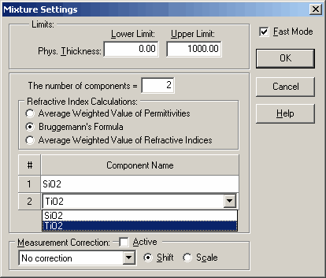

Mixture
Mixture characterization option is also a specialized type of Characterization procedure.
In this mode, the refractive index of the layer is determined as a mixture of a predefined set of materials. The fractions of these materials are included in the set of model parameters.

The mixture characterization option necessitates specifying the limits for layer thickness.
Materials that are to be incorporated into the refractive index model must be selected in the central section of this dialog window. These materials should be created beforehand in the Layer Material database. The refractive index calculations dictate how the refractive index of the composition is computed.
This option can be utilized in either conventional or fast mode, analogous to the characterization option.
Additionally, the measurement correction option can be applied if significant systematic errors in the measurement data are anticipated.